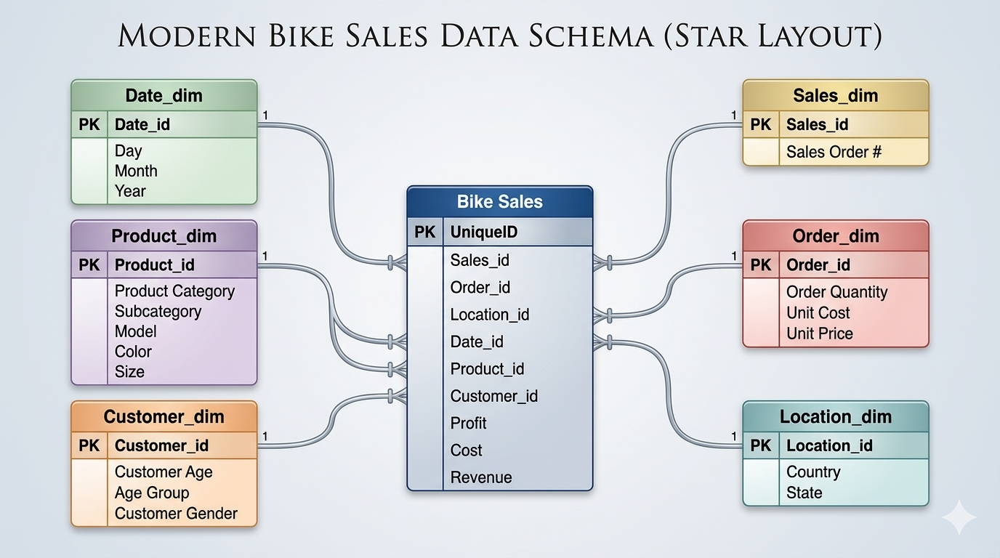

Lab - Preparing Data
Objectives
In this lab, you will learn the basics of cleaning data in Microsoft Excel. Data needs to be cleaned before it can be analyzed. Cleaning the data makes it easier to read and interpret, ensures consistency and accurate results, and enables a better decision-making process.
Part 1: Explore a Sample Set of Data
Part 2: Data Cleaning
Background / Scenario
The rapidly increasing volume and complexity of data are due to growing mobile data traffic, cloud computing traffic, and adoption of technologies including the Internet of Things and Artificial Intelligence. Data in its raw form is useless unless it can be cleaned and analyzed to provide information that leads to knowledge and wisdom for actionable intelligence. Businesses are quickly discovering that they do not actually want data itself—they want the information and knowledge that comes from data, which they can use to make better decisions.
Required Resources
Mobile device or PC/laptop with an internet connection and Microsoft Excel or similar spreadsheet program.
Note: The precise steps to format and manipulate data in Excel can vary between platforms and versions. The instructions in this lab are based on the free version of Excel available from Office.com and may have to be modified to match the user’s platform, software, or version to achieve the results shown in this lab.